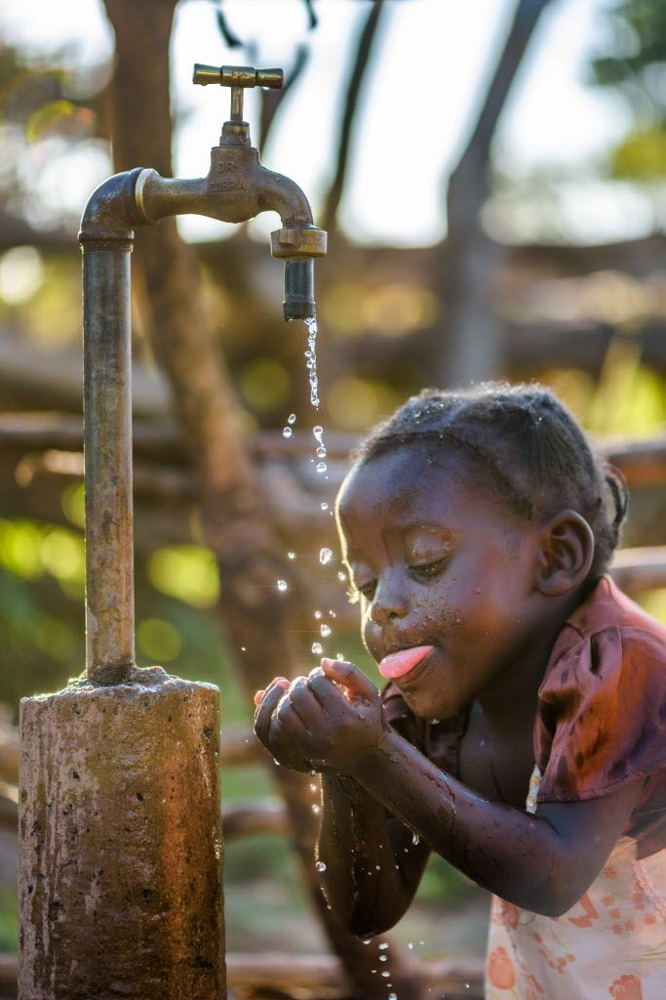
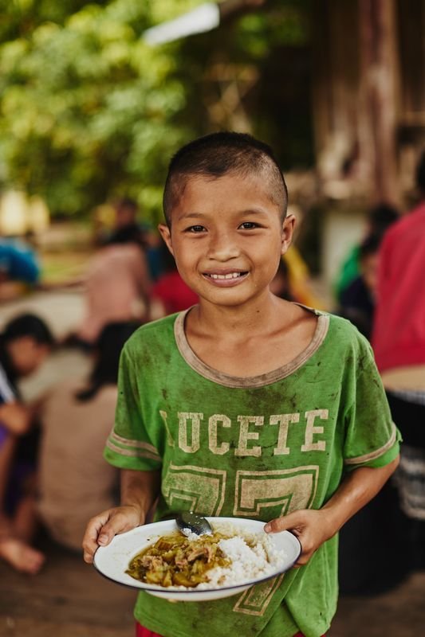
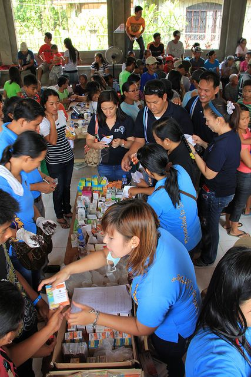
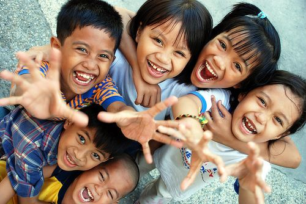
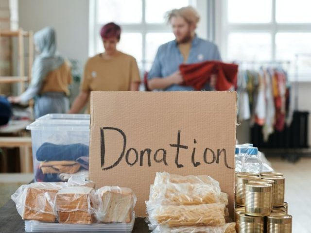

Bantuan medis merupakan salah satu bentuk donasi yang sangat penting bagi masyarakat di daerah terpencil. Dalam banyak kasus, mereka tidak memiliki akses yang memadai ke fasilitas kesehatan, yang menyebabkan kondisi kesehatan mereka semakin memburuk. Dengan menyumbangkan alat medis, obat-obatan, atau biaya perawatan, kita bisa membantu mereka untuk mendapatkan pelayanan medis yang layak. Selain itu, pelatihan tenaga medis lokal juga menjadi bagian dari program ini agar mereka dapat memberikan perawatan dasar secara mandiri di masa depan. Donasi Anda dapat menyelamatkan banyak nyawa dan membawa perubahan besar bagi komunitas yang membutuhkan.

Pendidikan untuk Anak-Anak Yatim yang Terlupakan
Anak-anak yatim sering kali menjadi kelompok yang terpinggirkan dalam masyarakat, terutama dalam hal akses pendidikan. Banyak dari mereka yang harus bekerja sejak dini untuk membantu keluarga mereka, sehingga tidak memiliki kesempatan untuk mendapatkan pendidikan yang layak. Melalui donasi ini, kami berusaha menyediakan beasiswa dan fasilitas pendidikan untuk anak-anak yatim agar mereka bisa mengejar cita-cita mereka. Program ini mencakup pemberian biaya sekolah, alat tulis, dan berbagai fasilitas pendukung lainnya. Dengan pendidikan, kami percaya mereka dapat memiliki masa depan yang lebih baik dan bebas dari belenggu kemiskinan.

Bantuan Darurat untuk Korban Bencana Alam
Bencana alam sering datang tanpa peringatan, menyebabkan kerusakan besar pada kehidupan masyarakat. Korban bencana alam seringkali kehilangan tempat tinggal, harta benda, dan bahkan anggota keluarga mereka. Program donasi untuk bencana alam berfokus pada bantuan darurat berupa makanan, pakaian, obat-obatan, dan tempat tinggal sementara. Selain itu, kami juga melakukan pemulihan jangka panjang dengan membangun kembali infrastruktur yang rusak dan membantu masyarakat untuk bangkit dari keterpurukan. Setiap donasi Anda sangat berarti bagi mereka yang sedang berjuang untuk memulai kembali kehidupan mereka.

Bantuan Pangan untuk Keluarga yang Kekurangan
Keluarga miskin sering kali kesulitan untuk memenuhi kebutuhan pangan sehari-hari. Dalam beberapa daerah, kelaparan menjadi masalah besar yang mengancam kehidupan anak-anak dan orang dewasa. Program bantuan pangan ini bertujuan untuk menyediakan paket pangan yang berisi bahan makanan pokok seperti beras, minyak, dan sayur-sayuran untuk keluarga yang membutuhkan. Dengan setiap donasi, kita dapat mengurangi tingkat kelaparan dan membantu mereka mendapatkan makanan bergizi untuk bertahan hidup. Donasi Anda dapat memberikan harapan baru bagi keluarga-keluarga yang berjuang setiap hari untuk mendapatkan makanan.
Memberikan Kehidupan Baru bagi Anak Jalanan
Anak-anak yang hidup di jalanan sering kali menjadi korban eksploitasi dan kekerasan. Mereka sering terpaksa bekerja keras untuk bertahan hidup, tanpa mendapat kesempatan untuk belajar atau berkembang. Program rehabilitasi anak jalanan bertujuan untuk memberikan mereka tempat tinggal yang aman, pendidikan, serta keterampilan hidup yang diperlukan untuk keluar dari siklus kehidupan jalanan. Donasi Anda akan membantu mereka mendapatkan perawatan medis, pendidikan, dan kesempatan untuk memulai kehidupan yang lebih baik, jauh dari kekerasan dan kemiskinan.

Akses Air Bersih untuk Semua
Akses terhadap air bersih adalah hak dasar setiap manusia, namun masih banyak daerah yang kesulitan mendapatkan air yang layak konsumsi. Dalam beberapa komunitas, penduduk harus berjalan jauh untuk mendapatkan air yang tidak selalu bersih dan aman untuk diminum. Melalui program donasi ini, kami berupaya menyediakan akses air bersih dengan membangun sumur, sistem penyaringan, dan instalasi air bersih. Donasi Anda akan sangat membantu dalam mengurangi penyebaran penyakit yang disebabkan oleh air kotor dan memberikan kualitas hidup yang lebih baik bagi masyarakat yang kekurangan air bersih.

Perlindungan Hewan dari Kekerasan
Hewan juga membutuhkan perhatian dan perlindungan, terutama mereka yang terlantar dan teraniaya. Program perlindungan hewan bertujuan untuk menyelamatkan hewan-hewan yang terluka atau diabaikan. Donasi Anda akan digunakan untuk menyediakan tempat perlindungan sementara, makanan, perawatan medis, dan upaya adopsi bagi hewan-hewan yang membutuhkan. Selain itu, kami juga berfokus pada edukasi masyarakat tentang perlunya perlindungan terhadap hewan dan bagaimana menjadi pemilik hewan yang bertanggung jawab. Bersama-sama, kita dapat memberikan kehidupan yang lebih baik bagi hewan-hewan yang membutuhkan.